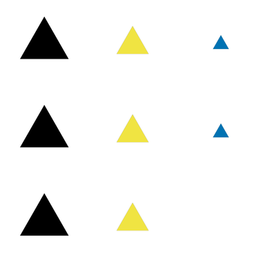
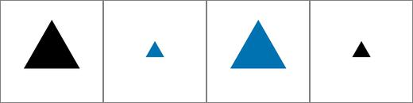
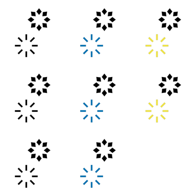

<!DOCTYPE html>
<html>
  <head>
    <meta charset='UTF-8'>
    <meta name="robots" content="noindex">
    <title>Abstract reasoning task</title>
      <script src='ART_js/jquery.min.js'></script>
      <script src='ART_js/math.min.js'></script>
      <script src='ART_js/jspsych/jspsych.js'></script>
      <script src='ART_js/jspsych/plugins/jspsych-text.js'></script>
      <script src='ART_js/jspsych/poldrack_plugins/jspsych-poldrack-text.js'></script>
      <script src='ART_js/jspsych/poldrack_plugins/jspsych-poldrack-instructions.js'></script>
      <script src='ART_js/jspsych/poldrack_plugins/jspsych-poldrack-single-stim.js'></script>
      <script src='ART_js/jspsych/plugins/jspsych-survey-text.js'></script>
      <script src='ART_js/jspsych/poldrack_plugins/jspsych-single-stim-button.js'></script>
      <script src='ART_js/jspsych/poldrack_plugins/poldrack_utils.js'></script>
      <script src='ART_js/jspsych/poldrack_plugins/jspsych-poldrack-survey-multi-choice.js'></script>
      <script src='ART_js/jspsych/plugins/jspsych-call-function.js'></script>
      <script src='ART_js/jspsych/poldrack_plugins/jspsych-attention-check.js'></script>
      <script src='ART_js/jspsych/poldrack_plugins/jspsych-poldrack-single-stim.js'></script>
      <script src="/assets/javascripts/jatos.js"></script>
      <link rel='stylesheet' type='text/css' href='ART_js/css/jspsych.css'>
      <link rel='stylesheet' type='text/css' href='ART_js/css/default_style.css'>
      <link rel='stylesheet' type='text/css' href='ART_js/css/style.css'>

<body>
<script>
  //Adapted from Experiment Factory script using JsPsych 5.0 version
jatos.onLoad(function(){
  $( document ).ready(function() {

    /* ************************************ */
/* Define helper functions */
/* ************************************ */
function getDisplayElement() {
  $('<div class = display_stage_background></div>').appendTo('body')
  return $('<div class = display_stage></div>').appendTo('body')
}

function fillArray(value, len) {
  if (len === 0) return [];
  var a = [value];
  while (a.length * 2 <= len) a = a.concat(a);
  if (a.length < len) a = a.concat(a.slice(0, len - a.length));
  return a;
}

var getInstructFeedback = function() {
  return '<div class = centerbox><p class = center-block-text>' + feedback_instruct_text +
    '</p></div>'
}

var getPracticeInstruct = function() {
  return '<div class = centerbox><p class = center-block-text>' + practice_feedback_text +
    '</p></div>'
}

/* ************************************ */
/* Define experimental variables */
/* ************************************ */
var run_attention_checks = false
var attention_check_thresh = 0.65
var sumInstructTime = 0 //ms
var instructTimeThresh = 0 ///in seconds
var id = jatos.studySessionData.ID;
var rng =Math.floor(Math.random() * 2); //counterbalance test form 1 & 2 across pre-and post-assessments
jatos.studySessionData.ART_set = rng;
if (rng==0){
  var tf = 'tf1'
}else{var tf = 'tf2'}
console.log(rng)
var path = 'ART_js/images/'
var prefix = '<div></div>'
var item_no = 80; //how many questions are included in the test

top_img1 = ['_1_M_ss3.jpeg','_2_M_ss1.jpeg','_3_M_ss2.jpeg', '_4_M_ss3.jpeg', '_5_M_ss1.jpeg',
          '_6_M_ss2.jpeg', '_7_M_ss3.jpeg',  '_8_M_ss1.jpeg', '_9_M_ss2.jpeg', '_10_M_ss3.jpeg',
          '_11_M_ss1.jpeg', '_12_M_ss2.jpeg', '_13_M_ss3.jpeg', '_14_M_ss1.jpeg',  '_15_M_ss2.jpeg',
          '_16_M_ss3.jpeg', '_17_M_ss1.jpeg', '_18_M_ss2.jpeg', '_19_M_ss3.jpeg',   '_20_M_ss1.jpeg',
          '_21_M_ss2.jpeg', '_22_M_ss3.jpeg', '_23_M_ss1.jpeg', '_24_M_ss2.jpeg', '_25_M_ss3.jpeg',
          '_26_M_ss1.jpeg',  '_27_M_ss2.jpeg', '_28_M_ss3.jpeg', '_29_M_ss1.jpeg',  '_30_M_ss2.jpeg',
          '_31_M_ss3.jpeg', '_32_M_ss1.jpeg',  '_33_M_ss2.jpeg', '_34_M_ss3.jpeg', '_35_M_ss1.jpeg',
          '_36_M_ss2.jpeg', '_37_M_ss3.jpeg', '_38_M_ss1.jpeg', '_39_M_ss2.jpeg',  '_40_M_ss3.jpeg',
          '_41_M_ss1.jpeg', '_42_M_ss2.jpeg', '_43_M_ss3.jpeg', '_44_M_ss1.jpeg', '_45_M_ss2.jpeg', 
          '_46_M_ss3.jpeg', '_47_M_ss1.jpeg', '_48_M_ss2.jpeg', '_49_M_ss3.jpeg', '_50_M_ss1.jpeg',
          '_51_M_ss2.jpeg',  '_52_M_ss3.jpeg', '_53_M_ss1.jpeg', '_54_M_ss2.jpeg', '_55_M_ss3.jpeg',
          '_56_M_ss1.jpeg', '_57_M_ss2.jpeg', '_58_M_ss3.jpeg',  '_59_M_ss1.jpeg', '_60_M_ss2.jpeg',
          '_61_M_ss3.jpeg', '_62_M_ss1.jpeg', '_63_M_ss2.jpeg', '_64_M_ss3.jpeg',  '_65_M_ss1.jpeg',
          '_66_M_ss2.jpeg', '_67_M_ss3.jpeg', '_68_M_ss1.jpeg', '_69_M_ss2.jpeg', '_70_M_ss3.jpeg', 
          '_71_M_ss1.jpeg', '_72_M_ss2.jpeg', '_73_M_ss3.jpeg', '_74_M_ss1.jpeg', '_75_M_ss2.jpeg',
          '_76_M_ss3.jpeg', '_77_M_ss1.jpeg',  '_78_M_ss2.jpeg', '_79_M_ss3.jpeg',  '_80_M_ss1.jpeg' ]
top_img2 = ['_1_M_ss2.jpeg','_2_M_ss3.jpeg', '_3_M_ss1.jpeg', '_4_M_ss2.jpeg','_5_M_ss3.jpeg', '_6_M_ss1.jpeg','_7_M_ss2.jpeg',   
            '_8_M_ss3.jpeg', '_9_M_ss1.jpeg','_10_M_ss2.jpeg', '_11_M_ss3.jpeg', '_12_M_ss1.jpeg','_13_M_ss2.jpeg', '_14_M_ss3.jpeg', 
            '_15_M_ss1.jpeg','_16_M_ss2.jpeg', '_17_M_ss3.jpeg', '_18_M_ss1.jpeg','_19_M_ss2.jpeg',  '_20_M_ss3.jpeg',
             '_21_M_ss1.jpeg', '_22_M_ss2.jpeg', '_23_M_ss3.jpeg','_24_M_ss1.jpeg', '_25_M_ss2.jpeg', '_26_M_ss3.jpeg',
             '_27_M_ss1.jpeg', '_28_M_ss2.jpeg', '_29_M_ss3.jpeg','_30_M_ss1.jpeg', '_31_M_ss2.jpeg',
             '_32_M_ss3.jpeg', '_33_M_ss1.jpeg', '_34_M_ss2.jpeg', '_35_M_ss3.jpeg', '_36_M_ss1.jpeg', '_37_M_ss2.jpeg',
             '_38_M_ss3.jpeg', '_39_M_ss1.jpeg', '_40_M_ss2.jpeg', '_41_M_ss3.jpeg', '_42_M_ss1.jpeg',
             '_43_M_ss2.jpeg', '_44_M_ss3.jpeg', '_45_M_ss1.jpeg','_46_M_ss2.jpeg', '_47_M_ss3.jpeg', '_48_M_ss1.jpeg',
             '_49_M_ss2.jpeg','_50_M_ss3.jpeg','_51_M_ss1.jpeg', '_52_M_ss2.jpeg', '_53_M_ss3.jpeg',
             '_54_M_ss1.jpeg', '_55_M_ss2.jpeg', '_56_M_ss3.jpeg', '_57_M_ss1.jpeg', '_58_M_ss2.jpeg', '_59_M_ss3.jpeg',
             '_60_M_ss1.jpeg', '_61_M_ss2.jpeg','_62_M_ss3.jpeg', '_63_M_ss1.jpeg', '_64_M_ss2.jpeg',
             '_65_M_ss3.jpeg', '_66_M_ss1.jpeg', '_67_M_ss2.jpeg','_68_M_ss3.jpeg', '_69_M_ss1.jpeg', 
             '_70_M_ss2.jpeg', '_71_M_ss3.jpeg', '_72_M_ss1.jpeg','_73_M_ss2.jpeg', '_74_M_ss3.jpeg', '_75_M_ss1.jpeg',
             '_76_M_ss2.jpeg', '_77_M_ss3.jpeg', '_78_M_ss1.jpeg','_79_M_ss2.jpeg',  '_80_M_ss3.jpeg'
       ]
//paired difference distractors
var bottom_pdimg = [ 'bottom_1_pd.jpeg', 'bottom_2_pd.jpeg','bottom_3_pd.jpeg', 'bottom_4_pd.jpeg','bottom_5_pd.jpeg', 'bottom_6_pd.jpeg','bottom_7_pd.jpeg',
'bottom_8_pd.jpeg', 'bottom_9_pd.jpeg','bottom_10_pd.jpeg', 'bottom_11_pd.jpeg', 'bottom_12_pd.jpeg', 'bottom_13_pd.jpeg', 'bottom_14_pd.jpeg', 
'bottom_15_pd.jpeg', 'bottom_16_pd.jpeg', 'bottom_17_pd.jpeg', 'bottom_18_pd.jpeg', 'bottom_19_pd.jpeg', 'bottom_20_pd.jpeg', 'bottom_21_pd.jpeg', 
'bottom_22_pd.jpeg', 'bottom_23_pd.jpeg', 'bottom_24_pd.jpeg', 'bottom_25_pd.jpeg', 'bottom_26_pd.jpeg', 'bottom_27_pd.jpeg', 'bottom_28_pd.jpeg', 
'bottom_29_pd.jpeg', 'bottom_30_pd.jpeg', 'bottom_31_pd.jpeg', 'bottom_32_pd.jpeg', 'bottom_33_pd.jpeg', 'bottom_34_pd.jpeg', 'bottom_35_pd.jpeg', 
'bottom_36_pd.jpeg', 'bottom_37_pd.jpeg', 'bottom_38_pd.jpeg', 'bottom_39_pd.jpeg',  'bottom_40_pd.jpeg', 'bottom_41_pd.jpeg','bottom_42_pd.jpeg', 
'bottom_43_pd.jpeg', 'bottom_44_pd.jpeg', 'bottom_45_pd.jpeg', 'bottom_46_pd.jpeg', 'bottom_47_pd.jpeg', 'bottom_48_pd.jpeg', 'bottom_49_pd.jpeg',  
'bottom_50_pd.jpeg', 'bottom_51_pd.jpeg', 'bottom_52_pd.jpeg', 'bottom_53_pd.jpeg', 'bottom_54_pd.jpeg', 'bottom_55_pd.jpeg', 'bottom_56_pd.jpeg', 
'bottom_57_pd.jpeg', 'bottom_58_pd.jpeg', 'bottom_59_pd.jpeg', 'bottom_60_pd.jpeg', 'bottom_61_pd.jpeg', 'bottom_62_pd.jpeg', 'bottom_63_pd.jpeg', 
'bottom_64_pd.jpeg', 'bottom_65_pd.jpeg', 'bottom_66_pd.jpeg', 'bottom_67_pd.jpeg', 'bottom_68_pd.jpeg', 'bottom_69_pd.jpeg',  'bottom_70_pd.jpeg', 
'bottom_71_pd.jpeg', 'bottom_72_pd.jpeg', 'bottom_73_pd.jpeg', 'bottom_74_pd.jpeg', 'bottom_75_pd.jpeg', 'bottom_76_pd.jpeg', 'bottom_77_pd.jpeg',
'bottom_78_pd.jpeg', 'bottom_79_pd.jpeg', 'bottom_80_pd.jpeg']
 //minimum difference distractors
var bottom_mdimg =[
'bottom_1_md.jpeg','bottom_2_md.jpeg', 'bottom_3_md.jpeg', 'bottom_4_md.jpeg', 'bottom_5_md.jpeg','bottom_6_md.jpeg',  'bottom_7_md.jpeg', 
'bottom_8_md.jpeg', 'bottom_9_md.jpeg','bottom_10_md.jpeg', 'bottom_11_md.jpeg', 'bottom_12_md.jpeg', 'bottom_13_md.jpeg', 'bottom_14_md.jpeg', 
'bottom_15_md.jpeg', 'bottom_16_md.jpeg', 'bottom_17_md.jpeg', 'bottom_18_md.jpeg', 'bottom_19_md.jpeg',  'bottom_20_md.jpeg', 'bottom_21_md.jpeg', 
'bottom_22_md.jpeg', 'bottom_23_md.jpeg', 'bottom_24_md.jpeg', 'bottom_25_md.jpeg', 'bottom_26_md.jpeg', 'bottom_27_md.jpeg', 'bottom_28_md.jpeg', 
'bottom_29_md.jpeg', 'bottom_30_md.jpeg', 'bottom_31_md.jpeg', 'bottom_32_md.jpeg', 'bottom_33_md.jpeg', 'bottom_34_md.jpeg', 'bottom_35_md.jpeg', 
'bottom_36_md.jpeg', 'bottom_37_md.jpeg', 'bottom_38_md.jpeg', 'bottom_39_md.jpeg', 'bottom_40_md.jpeg', 'bottom_41_md.jpeg', 'bottom_42_md.jpeg', 
'bottom_43_md.jpeg', 'bottom_44_md.jpeg', 'bottom_45_md.jpeg', 'bottom_46_md.jpeg', 'bottom_47_md.jpeg', 'bottom_48_md.jpeg', 'bottom_49_md.jpeg', 
'bottom_50_md.jpeg', 'bottom_51_md.jpeg', 'bottom_52_md.jpeg', 'bottom_53_md.jpeg', 'bottom_54_md.jpeg', 'bottom_55_md.jpeg', 'bottom_56_md.jpeg', 
'bottom_57_md.jpeg', 'bottom_58_md.jpeg', 'bottom_59_md.jpeg',  'bottom_60_md.jpeg', 'bottom_61_md.jpeg', 'bottom_62_md.jpeg', 'bottom_63_md.jpeg', 
'bottom_64_md.jpeg', 'bottom_65_md.jpeg', 'bottom_66_md.jpeg', 'bottom_67_md.jpeg', 'bottom_68_md.jpeg', 'bottom_69_md.jpeg', 'bottom_70_md.jpeg', 
'bottom_71_md.jpeg', 'bottom_72_md.jpeg', 'bottom_73_md.jpeg', 'bottom_74_md.jpeg', 'bottom_75_md.jpeg', 'bottom_76_md.jpeg', 'bottom_77_md.jpeg', 
'bottom_78_md.jpeg', 'bottom_79_md.jpeg', 'bottom_80_md.jpeg'] 
var practice_tries = 0
var practice_thresh = 5

//after combining option images, the position of the correct option; same for PD and MD 
var correct_answer_tf1 = [0, 2, 3, 3, 2, 3, 1, 1, 3, 3, 1, 0, 1, 1, 0, 3, 3, 2, 1, 0, 2, 3, 3, 1, 0, 3, 3, 0, 0, 1, 2, 0, 2, 0, 0, 0, 3, 2, 0, 2, 2, 1, 1, 2, 1, 3, 3, 0, 1, 0, 0, 3, 1, 1, 3, 0, 1, 3, 2, 3, 0, 2, 2, 0, 2, 3, 0, 0, 1,0, 0, 3, 1, 3, 0, 1, 2, 1, 2, 2];

var correct_answer_tf2 = [1, 2, 2, 3, 2, 3, 3, 1, 1, 1, 0, 0, 0, 1, 2, 2, 1, 3, 0, 0, 1, 2, 3, 3, 3, 1, 3, 2, 0, 3, 0, 3, 0, 0, 2, 0, 2, 1, 0, 3, 1, 0, 3, 0, 2, 0               , 3, 1, 2, 3, 2, 0, 3, 3, 3, 0, 1, 1, 2, 0, 0, 1, 2, 3, 1, 3, 0, 1, 0, 2, 1, 2, 1, 1, 2, 1, 1, 0, 2, 2]
if (rng==0){
  var correct_answer =correct_answer_tf1
  var top_img=top_img1
}else{var correct_answer = correct_answer_tf2;
  var top_img=top_img2}

var all_pages = []

for (var i = 0; i < item_no; i++) {
  var page = []
  if (Math.random()-0.5>0){//50-50 chance to use MD or PD solutions

    page.push(prefix + path + tf+ '/' +tf+ top_img[i] + top_id+ postfix + prefix + path + tf+ '/' + bottom_pdimg[i] + bottom_id + postfix)
  }else{
    page.push(prefix + path + tf + '/' +tf +top_img[i] + top_id+ postfix + prefix + path + tf+ '/' + bottom_mdimg[i] + bottom_id + postfix)
  }

  all_pages.push(page)
}

var opts = ["A", "B", "C", "D"]

var all_options = fillArray([opts], item_no)
//function to make the required input scales 
function make_scale (index){
  var scale = {
      "A": 0,
      "B": 0,
      "C": 0,
      "D": 0
  }
  var key = Object.keys(scale)[index]
  scale[key] = 1; 
  return [scale]
}

var score_scale = []
for (var i = 0; i < item_no; i++) {
  score_scale.push(make_scale(correct_answer[i]))
}

//console.log(score_scale)
/* ************************************ */
/* Set up jsPsych blocks */
/* ************************************ */

/* define static blocks */

var feedback_instruct_text =
  'Welcome to the Abstract matrix reasoning task.<br><br> Press <strong>enter</strong> to begin.'
var feedback_instruct_block = {
  type: 'poldrack-text',
  cont_key: [13],
  text: getInstructFeedback,
  timing_post_trial: 0,
  timing_response: 180000,
  data: {
    exp_id: "art_instruction"
  }
};
/// This ensures that the subject does not read through the instructions too quickly.  If they do it too quickly, then we will go over the loop again.
var instructions_block = {
  type: 'poldrack-instructions',
  pages: [
    '<div class = centerbox><p class = block-text>This is a test of observation and reasoning. The top part of each problem is a pattern with one part cut out of it. </p><p class = block-text>Your task is to look at the pattern, think of what the missing part must look like to complete the pattern correctly, both along the rows and the columns, and then find the right piece out of the 4 options shown below. Only one of the choices is perfectly correct.<br><br>The following page will have an example trial.</p></div>',
    '<div class = centerbox><p class = block-text><strong>Look at the top part (the pattern) of this sample problem.</strong> Notice that going across the rows, the number of horizontal lines is equal. Going down the columns, the number of squares is equal.<div class="sample_img"></div><p class= "block-text"><strong>Look at the solution of this sample problem.</strong> The best completion of the missing cell is the option "A" which is selected below.</p><div class="sample_img"></div><div class="sample_img"></div></p></div>',
    '<div class = centerbox><p class = block-text>You will now complete two practice trials with feedback. The test trials will not include feedback.</p></div>'
  ],
  allow_keys: false,
  show_clickable_nav: true,
  timing_post_trial: 1000,
  data: {
    exp_id: "art_instruction"
  }
};

var instruction_node = {
  timeline: [feedback_instruct_block, instructions_block],
  /* This function defines stopping criteria */
  loop_function: function(data) {
    for (i = 0; i < data.length; i++) {
      if ((data[i].trial_type == 'poldrack-instructions') && (data[i].rt != -1)) {
        rt = data[i].rt
        sumInstructTime = sumInstructTime + rt
      }
    }
    if (sumInstructTime <= instructTimeThresh * 1000) {
      feedback_instruct_text =
        'Read through instructions too quickly.  Please take your time and make sure you understand the instructions.  Press <strong>enter</strong> to continue.'
      return true
    } else if (sumInstructTime > instructTimeThresh * 1000) {
      feedback_instruct_text =
        'Done with instructions. Press <strong>enter</strong> to continue.'
      return false
    }
  }
}

var practice_feedback_text =
  'Starting with first example trial.  Press <strong> Enter </strong> to continue.'
var practice_feedback_block = {
  type: 'poldrack-text',
  cont_key: [13],
  text: getPracticeInstruct,
  timing_post_trial: 0,
  timing_response: 180000,
  data: {
    exp_id: "art",
    exp_stage: 'practice',
    trial_id: 'feedback'
  }
};

var practice_trials_1 = []
var practice_block_1 = {
  type: "poldrack-survey-multi-choice",
  exp_id: "art_practice",
  horizontal: true,
  preamble: '',
  pages: [
    [
      '<div></div><div></div>'
    ]
  ],
  options: [
    [
      ["A", "B", "C", "D"]
    ]
  ],
  scale: [
    [{
      "A": 0,
      "B": 1,
      "C": 0,
      "D": 0
    }]
  ],
  show_clickable_nav: true,
  allow_backward: true,
  required: [
    [
      [true]
    ]
  ],
};


var practice_node_1 = {
  timeline: [practice_feedback_block, practice_block_1],
  /* This function defines stopping criteria */
  loop_function: function(data) {
    practice_tries += 1
    //here it should check if the answer to the question is correct
    for (var i = 0; i < data.length; i++) {
      if ((data[i].trial_type == 'poldrack-survey-multi-choice') && (data[i].score_response !=
          1)) {
        practice_feedback_text = 'That is incorrect. Please press <strong>Enter</strong> to try again.'
        return true
      } else if ((data[i].trial_type == 'poldrack-survey-multi-choice') && (data[i].score_response ==
          1)) {
        practice_tries = 0
        practice_feedback_text = 'That is correct. Please press <strong>Enter</strong> to continue.'
        return false
      } else if (practice_tries > practice_thresh) {
        practice_tries = 0
        practice_feedback_text = "That is incorrect, but we'll move on. Please press <strong>Enter</strong> to continue."
        return false
      }
    }
  }
}

var practice_trials_2 = []
var practice_block_2 = {
  type: "poldrack-survey-multi-choice",
  exp_id: "art_practice",
  horizontal: true,
  preamble: '',
  pages: [
    [
      '<div></div><div></div>'
    ]
  ],
  options: [
    [
      ["A", "B", "C", "D"]
    ]
  ],
  scale: [
    [{
      "A": 0,
      "B": 0,
      "C": 0,
      "D": 1
    }]
  ],
  show_clickable_nav: true,
  allow_backward: true,
  required: [
    [
      [true]
    ]
  ],
};


var practice_node_2 = {
  timeline: [practice_feedback_block, practice_block_2],
  /* This function defines stopping criteria */
  loop_function: function(data) {
    practice_tries += 1
    //here it should check if the answer to the question is correct
    for (var i = 0; i < data.length; i++) {
      if ((data[i].trial_type == 'poldrack-survey-multi-choice') && (data[i].score_response !=
          1)) {
        practice_feedback_text = 'That is incorrect. Please press <strong>Enter</strong> to try again.'
        return true
      } else if ((data[i].trial_type == 'poldrack-survey-multi-choice') && (data[i].score_response ==
          1)) {
        practice_feedback_text = 'That is correct. Please press <strong>Enter</strong> to continue.'
        practice_tries = 0
        return false
      } else if (practice_tries > practice_thresh) {
        practice_feedback_text = "That is incorrect, but we'll move on. Please press <strong>Enter</strong> to continue."
        practice_tries = 0
        return false
      }
    }
  }
}

var start_test_block = {
  type: 'poldrack-text',
  cont_key: [13],
  text: '<div class = centerbox><p class = center-block-text>You are now ready to begin the test trials.<br><br>You will have 8 minutes to solve as many problems as possible. <br><br>For each trial, you have up to 30 seconds to complete and you will be reminded when there\'s 10 seconds left . There will not be feedback this time. <br><br>Press <strong> Enter </strong> to continue.</p></div>',
  timing_post_trial: 0,
  timing_response: 180000,
  data: {
    exp_id: "art_instruction"
  }
};

var survey_block = {
  type: "poldrack-survey-multi-choice",
  exp_id: "art",
  trial_id: "art_test",
  horizontal: true,
  preamble: '',
  pages: all_pages,
  options: all_options,
  scale: score_scale,
  show_clickable_nav: true,
  allow_backward: false,
  timing_response: 30000,
  required: fillArray([true], item_no),

};

var end_block = {
  type: 'text',
  text: '<div class = centerbox><p class = center-block-text>Congratulations for completing this task!</p><p class = center-block-text>Press <strong>enter</strong> to continue.</p></div>',
  cont_key: [13],
  data: {
    exp_id: "art_end"
  }
};

    /* experiment parameters */
    var d = new Date();
    var month = d.getMonth();
    var date = d.getDate();
    var hour = d.getHours();
    var date = '_'+month+'_'+date+'_'+hour;

        //Set up experiment
    var art_experiment = []
    art_experiment.push(instruction_node);
    art_experiment.push(practice_node_1);
    art_experiment.push(practice_node_2);
    art_experiment.push(start_test_block);
    art_experiment.push(survey_block);
    art_experiment.push(end_block);

    jsPsych.init({
          timeline: art_experiment,
          display_element: "getDisplayElement",
          fullscreen: true,
          on_trial_finish: function(data){
              addID('ART')
             },
          on_finish: function(data) {
              jsPsych.data.addProperties({subject: jatos.studySessionData.ID});
              jsPsych.data.addProperties({task_no: jatos.studySessionData.currentTask });
              jatos.studySessionData.currentTask +=1 //keep count of tasks
              condition_order = jatos.studySessionData.order ;
              jsPsych.data.displayData('csv')
              var resultData = jsPsych.data.dataAsCSV();
               try {
                
              jatos.submitResultData(resultData,function(){
                jatos.startComponentByPos(condition_order[jatos.studySessionData.currentTask]);
}) ;
              //jsPsych.data.displayData('csv')
                  }
              catch(err){
                  alert('Saving to server failed! '+
                              'Please save file to local computer.');
                  jsPsych.data.localSave('spatial_span_'+date+'.csv','csv');
                  jatos.startComponentByPos(condition_order[jatos.studySessionData.currentTask]);

            }
          }

      });
});
});

</script>
</body>
</html>
